Home
Welcome!
This is an anonymous personal website.
Poedit Bugs
The official Poedit Windows v3.8.1 has a serious bug: the program may crash after opening the Statistics window several times. Users will lose all changes since the last saving of the editing file.
The bug was reported by someone else, and I verified that the issue really exists.
There is not a fixed number of time you need to open the Statistics window to crash the program. According to the original reporter of this bug, sometimes you need as few as two opens to crash the program. At other times, the program only crashes after opening the Statistics window for tens of times.
This issue happens in both free and pro versions. In the pro version, this bug is more frequently triggered.
Here are recordings of two automated tests, one on the free version and another on the pro version.
According to the crash dump, the error code is 0xc0000409, which means STATUS_STACK_BUFFER_OVERRUN.
The original reporter said that Poedit Windows v3.8 does not seem to have this issue. However, in the email communication with the developer, there is no changes in the Statistics window related code between v3.8 and v3.8.1. The behavior of this bug suggests that it may be due to some race conditions. It is suspected that even earlier Windows versions such as v3.8 may have similar race conditions issues, although they may not have manifested as program crashes. It is advised that users do not rely on Poedit for serious translation work as of now, since it is unclear which versions are affected by the race conditions issues. If you need to use the official proprietary version without alternatives, remember to save often and make backups. You may also try the open source version, but it lacks many pro features.
Synthesia Bugs
There is a leaked license of Synthesia, of which the owner is Brendan Rosso and the purchase date is November 7, 2009.
The latest versions of Synthesia checks against a list of banned license ID's embedded in the programs.
The license ID of this leaked license is in the list.
As a result, even if you try to activate Synthesia offline with this leaked license, it will not work.
There are patches online to remove many banned license ID's from the programs.
After applying patches correctly, offline activations can work with this leaked license.
However, if Synthesia can connect to the Internet, it will check the currently activated license ID online. The activation will be lost if the leaked license ID is detected. Thus, it is correct that some people claim that they need to use the system firewall to ban the Internet connections of the Synthesia programs in addition to applying the patches to use the leaked license.
There are also patched versions that bypass the license checks completely, requiring no license at all, which will not be affected by online checks, at least as of now.
Synthesia's Android version may not work on all Android devices with at least the minimum required Android version of the app. On my two Android devices, the Synthesia app runs fine on one, but crashes after a short period after opening on another. It is advised that people try whether the app can work on all their devices before deciding to purchase an unlocked version.
GitHub Actions Arch Linux libgmp dependency
When using GitHub Actions to build projects inside Arch Linux docker containers, if the libgmp dependency needs to be fetched, it may fail if the dependency is downloaded from https://gmplib.org/.
I searched online and found an instance where the website maintainer of GMP claimed that they were DDoS attacked by Microsoft IPs, which turned out to be from a GitHub project building FFmpeg using GitHub Actions. Since the builds were run as cron jobs, when there were many forks of the projects with GitHub Actions enabled, all these forks started to pull the GMP dependency at around the same time, which caused "huge" server loads ("huge" was claimed by the website maintainer of GMP, which might or might not be true). Even though the GitHub project author had already deployed caches for dependencies, new forks still need to pull all dependencies once, because caches cannot be shared among different repositories for security considerations. I am not familiar with the Mercurial SCM GMP was using, but it seems quite unexpected to me that concurrent pulls from only 100 to 200 jobs would cause a "huge" load to the server. Even though cloning the repo and compressing to archives could result in much higher loads to the server than downloading static archives, in my opinion, it should be quite easy to set up a cache, because all projects are pulling from the same commit and the final archive is quite small, only around 2 MiB.
Now, it seems that the official GMP website still imposes concurrent connection limits to the static archives, not only cloning.
My GitHub Actions jobs were downloading gmp-6.3.0.tar.lz on 6 concurrent jobs, and one job successfully downloaded it, the connection was closed in the middle of downloading for another job, and downloads failed with time out for all other jobs.
I believe the root cause was concurrent connection or download limits, because I could download the archive fine on my local computer.
I feel that it is so annoying, since it breaks automation on GitHub, and only this dependency has issues.
Other package management systems may have their own repositories hosting libgmp to avoid being affected.
Thus, when setting up automation jobs, not only on GitHub Actions but also other CIs, it is important to check whether there is libgmp dependency that requires downloading from the GMP official website. If so, make sure to download the archive individually and set up a local repository or cache. Periodically manually download and update the archive if needed. Otherwise, you will likely face major supply chain security issues, since availability is an important part of security.
UPX Packer Bugs
When I was developing a Rust project using mimalloc and compiling Windows targets, I found that the executables could no longer run after packing by UPX.
After searching, there is a related open issue in the UPX GitHub repo: https://github.com/upx/upx/issues/880.
I was building on Windows 10 and the packed executables could not run either, so the issue is not specific to Windows 11. The exit code was -1073741819.
Currently, I have disabled the use of UPX for windows binaries. I will keep an eye on the status of the above issue and try again once it is resolved.
Update: the GitHub issue has been resolved, and UPX 5.1.0 no longer has this bug.
IP and DNS Leaks
Even if you are using VPNs, your public IPs, local IPs, and/or DNS servers may be leaked if your VPN and/or browser configurations are not correctly set.
IP leaks
A most probable set of browser APIs that causes IP leaks is WebRTC. There are several free tools online to check for WebRTC IP leaks:
Browsers may have options to disable WebRTC entirely or disable local IP addresses only. The latter option is better in my opinion, since it causes less impact to normal browser fingerprints and can still support some of the WebRTC functionalities. You may still need to enable local IP addresses of WebRTC for some applications for them to work correctly.
IPv6 leaks are possible if your proxies or VPNs only redirect IPv4 traffic, but your DNS servers resolve domains to IPv6 addresses too, and you can connect to the Internet by IPv6. A free tool online to check for IPv6 leaks:
DNS leaks
Even if your VPNs have dedicated DNS servers, DNS leaks can still happen if your operating system either does not use it or queries both VPNs' DNS servers and locally assigned DNS servers by your routers. There is a free tool online to check for DNS leaks:
It can usually happen if you are using proxy without ensuring DNS queries being proxied, or you are using Windows with TAP / TUN drivers that create new network adapters for proxying all kinds of network traffic, but the system send DNS queries through all available network adapters including that of the local network.
For WireGuard, you can set AllowedIPs as 0.0.0.0/0,::/0 to make clients prevent DNS leaks automatically (including on Windows).
For OpenVPN, you have to add block-outside-dns for Windows clients. Also, to prevent IPv6 leaks, you need redirect-gateway ipv6 and maybe block-ipv6.
The way a server can determine DNS servers you are using is to make requests to randomly generated subdomains, so that they can observe where the corresponding DNS queries come from. Since the subdomains are randomly generated and long enough, it is nearly impossible that your DNS servers have caches. Thus, even if your DNS servers do not respect DNS TTL (Time to Live) specified by the authoritative DNS servers, the checks can still succeed, especially if the checks make requests to multiple random subdomains.
CyberChef
Introduction
CyberChef is a simple, intuitive web app for carrying out all manner of "cyber" operations within a web browser. These operations include simple encoding like XOR and Base64, more complex encryption like AES, DES and Blowfish, creating binary and hexdumps, compression and decompression of data, calculating hashes and checksums, IPv6 and X.509 parsing, changing character encodings, and much more.
CyberChef is a convenient tool that can be used directly in browser, supporting various useful features for security related tasks. It can also be downloaded as a standalone version, which can be used in segregated networks. It is open source and continuously being developed to support more features.
Links
You should use the official demo above, instead of other websites running CyberChef, which may or may not be secure. You should download latest version from the demo web page, instead of the GitHub releases. The archives of the GitHub releases may have the same version number, but the built time can be very outdated and the features lag behind.
EmEditor 14 Legacy Registration Key Generators Comparison
There are a good number of illegitimate registration keys generator on the Internet for EmEditor, targeting the version 14 legacy registration key format. This post compares all such key generators I can find on the Internet. The main goal is to find out:
- Whether they generate working keys that can be accepted by EmEditor 24.x and 25.x;
- Whether EmEditor will determine it is legitimate locally (excluding online checks, since almost all generated keys do not have corresponding purchase records and thus they cannot pass online checks, unless it gets lucky to generate the same key as a genuine sold key).
To prevent the generated keys in this post from being used to register EmEditor illegitimately, I mask the last two parts of all generated keys, since all information related to expiration dates and blacklisted patterns is in the first three parts.
This post is for educational purposes only. I do not endorse any of key generators mentioned. The key generators may or may not be safe to run. If you download key generators, there are risks that malicious programs can be included by the original authors and/or distributors. If you do not have sufficient knowledge about security and malware, it is advised that you run them in virtual machines (preferably with latest security patches and without file or network sharing or "tools" or "guest additions" that provide convenient direct interaction with the hosts) or online sandboxes designed for behavior analysis.
The results are in the table below.
"Valid" means that the program will accept the registration keys generated.
"Genuine" means that the generated keys can pass legitimacy checks locally, which means that the program will not prompt You might be a victim of software piracy messages when the machine is not connected to the Internet or the program's network access has been blocked.
| Author / Group | Release Date | Targeted Version | License Type | Valid | Genuine |
|---|---|---|---|---|---|
| BTCR | 2023-06-05 | 22.4.2 | Expiration | True | False |
| bang1338-BGSPA | 2023-01-16 | N/A | Lifetime | True | True |
| JonArbuckle-B4A | 2018-09-06 | N/A | Lifetime | True | True |
| GRUiA-PRF | 2023-03-02 | 22.2.2 | Lifetime | True | True |
| RadiXX11 | 2019-02-08 | N/A | Lifetime | True | True |
| Re1ndeer_Herder | 2017-11-20 | 17.2.4 | Lifetime | True | True |
| IzzaLunA-FEELiNNERS | 2024-05-09 | 24.x.x | Lifetime / Expiration | True | False |
| Shadow Mask | N/A / 2019-03-27 | 17.4.1 / N/A | Expiration / Lifetime | True | True |
| CRD | 2021-01-13 / 2021-10-26 | 20.4.4 / 21.2.0 | Expiration | True | False |
Below are screenshots of the key generators, which can support my above argument of genuine license keys if you know how the program does local checks.
BTCR
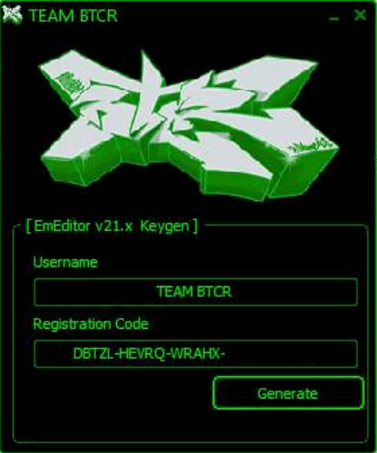
bang1338-BGSPA

JonArbuckle-B4A

GRUiA-PRF

RadiXX11
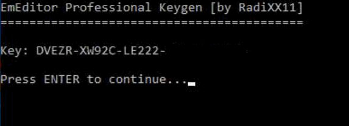
Re1ndeer_Herder
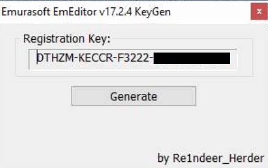
IzzaLunA-FEELiNNERS


Shadow Mask
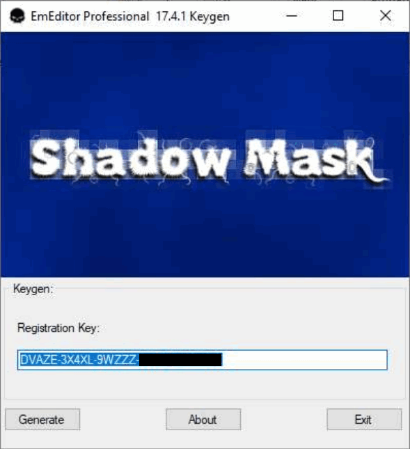
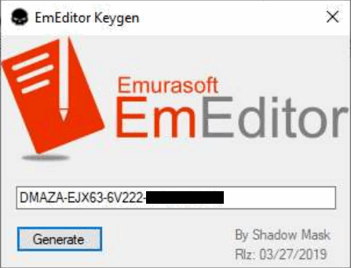
CRD
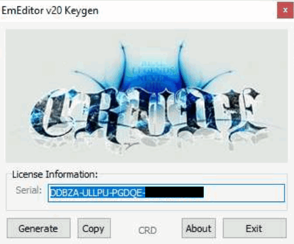

Browser Fingerprinting and Bot Detection
There are various browser fingerprinting and bot detection techniques, which aims to reduce impacts from unauthorized traffic. Fingerprinting includes IP (geolocation, ASNs, etc.), user agent, javascript fingerprinting (including math, navigator, canvas, webgl, etc.), TCP fingerprinting, TLS fingerprinting, HTTPS fingerprinting, etc. Bot detection includes user agent, ChromeDriver, Chrome DevTools Protocol (CDP), etc. Besides, there is also detection of API tampering and modified data to make it harder for attackers to circumvent detection.
There are more sophisticated bot detection techniques, such as analyzing behaviors (such as navigation, mouse clicks and movement, keyboard inputs, etc.) in short and long terms. These are out of the scope of this post because of their complexity and potentially either much higher false positive rates or much lower reliability.
Below, I list some of open source or free services that do fingerprinting and/or bot detection.
- https://pixelscan.net/
- https://browserleaks.com/
- https://kaliiiiiiiiii.github.io/brotector/
- https://bot.sannysoft.com/
- https://kkapsner.github.io/CanvasBlocker/test/
- https://abrahamjuliot.github.io/creepjs/
EmEditor 24.x - 25.x New Validation System Analysis
Introduction
EmEditor has not changed its registration code format since version 14, although the newer versions include online validation of the registration keys. For newer versions, it prompts you to register online every time you open the program if you register by registration keys without signing in, although this notification can be turned off. If you are not using authentic purchased registration keys, the program may prompt you that the entered registration key is not found on the server.
For recent versions, the program performs stricter checks on registration code formats and embeds blacklists of certain patterns.
If your registration keys cannot pass the additional checks or matches one of the blacklisted patterns, the program will prompt that You might be a victim of software piracy and enter an infinite loop of restarting the program and opening a web page on the EmEditor website regarding this topic.
Even with these efforts, illegitimate registration keys can still be generated and used to register offline successfully, given that they pass all checks by the program. In addition, genuine registration keys purchased from official sources can be used on much more devices than allowed. These might be the primary reasons that EmEditor is introducing the new validation system.
Although the legacy registration keys in the version 14 format can still be used in version 25 (as of now), it is very possible that they will not be supported anytime in the future, because the new validation system can accept offline licenses as well, which completely eliminates the only useful feature of legacy registration keys being used in segregated or air-gapped networks.
From version 24.5.3, EmEditor transitioned to Stripe as their primary payment processor. It results in the program accepting two new formats of licenses: Stripe registration key and Stripe subscription. It adds more complexity to the whole licensing system.
I did some software reverse engineering to analyze the new validation system, and I succeeded in registering the software by multiple new validation methods, including local device tokens (with or without legacy registration keys or Stripe registration keys) and offline licenses. I will post some of the findings here. I will not include the technical details or instructions to bypass the validation systems.
Registration keys
Before going to the core components of the new validation system, local device tokens and offline licenses, I analyzed the formats of supported registration keys (since they can be used in combination of local device tokens).
For legacy registration keys, version 14 keys start with the letter D.
You probably can find a lot of them on the Internet, mostly illegitimate ones.
They can be directly entered into the program to register it.
Surprisingly, I found another format of legacy registration keys (at least working for versions 24 and 25).
They start with the letter M.
Although they cannot be entered directly in the program to register it, they can be encoded and stored in some ini file (for portable versions) or somewhere in the registry (for installer versions) to register the program successfully.
They have the same encoded information as standard version 14 keys staring with D, including the expiration dates.
They even have the same format checks and blacklisted patterns.
I am not sure whether the keys starting with M have any relation with the Store Apps version of EmEditor, because I do not have an environment to test Store Apps.
For Stripe registration keys, they start with r-.
I tested that the program would accept any string with the correct length, even if the official blog claimed that the correct format should be r-xxxx-xxxx-xxxx-xxxx-xxxx where x is a base58 character.
I also confirmed that you can omit the r- prefix and the -'s in the keys.
To my surprise, the program accepts any string starting with r- too, even if their length is shorter than that of the expected format.
However, the program will store these keys in their incorrect format as is, instead of automatically adjusting to the correct format if you omit the r- prefix or the -'s from a correctly formatted string.
It indicates that the program can inherently check whether the entered keys have the correct format, but it somehow accepts those with incorrect formats.
Maybe EmEditor will add additional checks in later versions.
But for now, if you are using EmEditor completely without network, you can successfully register it using arbitrary strings with r- prefix.
(I did not check whether there are length limits.)
For Stripe registration keys, the program will never prompt you to register online or log in even if you have not done so, even with the incorrectly formatted ones. It seems kind of crazy to me that the new versions accept literally arbitrary registration keys, unlike the older versions that at least enforce some non-trivial formats. Maybe they plan to enforce the new validation system soon, so they are not spending any efforts on stuffs related to registration keys.
I found a blacklisted Stripe registration key too, but unlike blacklists for legacy registration key, the program would only prompt invalid key once at entering the key.
It would not automatically restart, open web pages, or prompt You might be a victim of software piracy messages.
The program seemed fully functional as well.
About dialog vs. Registration Information dialog
In recent versions, in addition to the About dialog, there is a Registration Information dialog to display registration information. The difference is that the Registration Information dialog only displays information about the new validation system. It does not contain any information about registration keys like in the About dialog.
Unregistered
The About dialog and the Registration Information dialog look like below when unregistered. The program is fully functional in the 30-day trial period. After 30 days, you either need to register or downgrade to the free version.
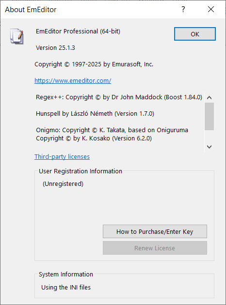

Registered by legacy registration keys
The About dialog shows the user name and expiration date (or Lifetime License) corresponding to the registration key, followed by Not registered indicating that it have not passed the new validation systems.
The Registration Information dialog shows Not registered only.
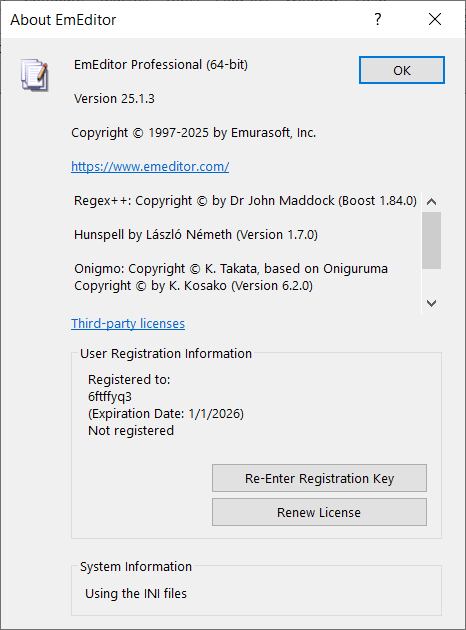


Registered by Stripe registration keys
The only difference of Stripe registration keys from legacy ones is in the About dialog, where there is not an expiration date or Lifetime License.

Offline license
Offline licenses can indeed register the software without connecting to the Internet, but the program attempts to check the license by sending requests to the server every time you start the program. Thus, you still need to block the Internet for the program to prevent your offline licenses from being deleted by online checks.
The program will delete legacy registration keys and local device tokens if you use offline licenses, so they cannot coexist. As a result, it is less complex than local device tokens that stores information of online registration, but it still has two variants.
Offline license without Stripe subscription
The information displayed is exactly the same in the About and the Registration Information dialogs.
The Registration Information dialog will show Validation successful if the offline license is validated.
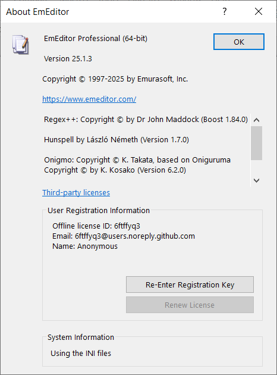
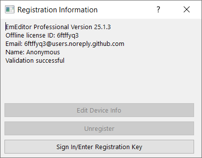
Offline license with Stripe subscription
The About and the Registration Information dialogs both have an additional line of the Stripe subscription ID.


Local device token
Local device tokens are saved after completing online registration of the current device. It can be used in combination with legacy registration keys, Stripe registration keys, and Stripe subscriptions. Of course, it cannot coexist with offline licenses.
Local device token without login, registration keys, or Stripe subscription
Normally, local device tokens will need one kind of registration keys or Stripe subscriptions. However, I found that the program could be fully unlocked without any of these or even the login information. Below shows how the registration information is displayed in this weird situation.
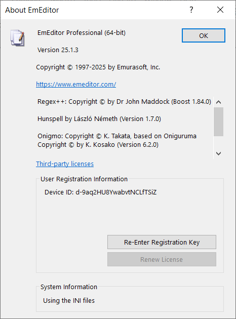
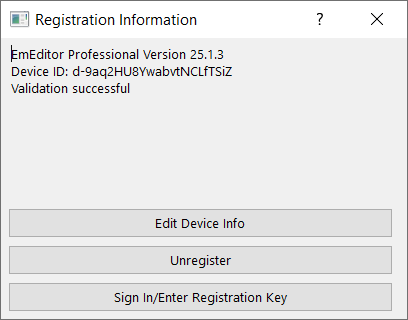
Local device token with login only
I am not sure whether this is actually valid, but local device token could work with login information only and without any registration keys or Stripe subscriptions.


Local device token with registration keys only
I am also not sure whether validations with registration keys always require logging in. The program accepted it anyway. It makes sense that the device is registered by the registration keys only, not mandating logging in.
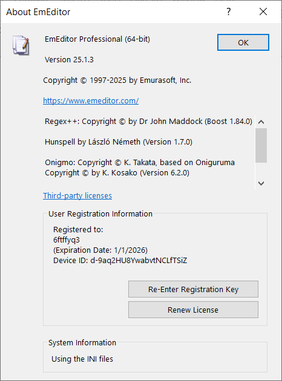

Local device token with login and registration keys
It should be guaranteed a valid combination for genuine licenses and validation processes.

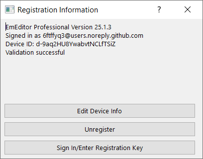
Local device token with login and Stripe subscriptions
Using Stripe subscriptions always require login, since there are no place to enter subscription info manually in the program.
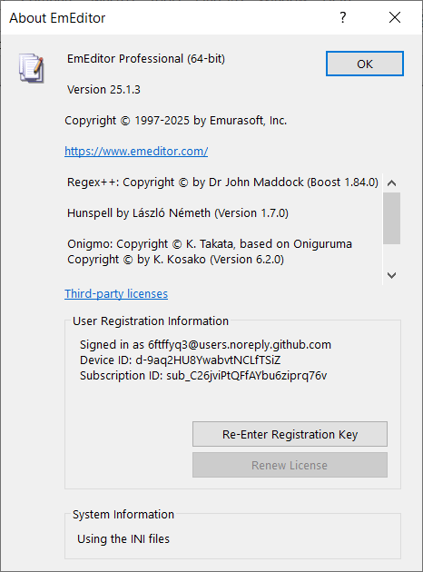

Other findings
- EmEditor will crash sometimes you open the Registration Information dialog with local device tokens and legacy registration keys without Internet connections. For some versions, it will crash only on 32-bit programs but not on 64-bit ones. It is likely a bug. I did not encounter crashes unless opening the Registration Information dialog, so it can be rare for regular users with genuine licenses.
- EmEditor will report file corruption and potential virus when you modify the main executable. You can still launch and use the program normally in this case. However, you can bypass it in multiple ways, such as signing the modified binary and trust the certificate locally, or add some keys to configurations to make the program skip integrity checks. The configuration key exists probably for testing purposes in isolated environment or accelerating automated tests, since verifying digital signatures can take much time (compared to the launching time). I managed to reduce the launching time by more than 50% by setting this configuration key.
- Local device tokens are tied to machine IDs. If you copy the token to another device, it will not work unless the program is on some removable media (you can store it on USB flash drives or use tools to create virtual drives marked as removable). There is a magic device ID that can make the program skip checking machine IDs regardless of program installation locations, probably for testing purposes.
- In my tests on Windows 10 64-bit, the 64-bit programs could get the machine IDs, but the 32-bit programs could not and fell back to a default machine ID.
The licensing systems of EmEditors seem to be increasingly complex, but the various findings from reverse engineering is entertaining.
GitHub Activity View
Each GitHub repo has an activity view, which shows all commit activities and file changes in each commit. Even if you delete branches or make force pushes, historical commits are still there. It implies that anyone who has read access to repos can see the whole history, which is true for all public repos.
On one hand, it is a feature that can mitigate data loss due to accidental or malicious. On the other hand, it causes privacy issues if users do not know the existence of activity views and understand their implications.
For the purposes of this blog, since there is nothing to hide, I feel OK to generate contents in a public repo and publish to GitHub Pages. The purpose of the force pushes in the blog repo is to prevent git history from affecting the efficiency of pulls and pushes, instead of trying to hide modification history.
Here is a screenshot of the activity view of the public blog repo:

You can click on the dots at the right end of each commit, and then click the Compare changes button to view file changes.

On this page, since the commit is from a force push, there will not be difference shown compared to the previous commit. However, all text and image files are displayed, with some large files requiring you to click on Load diff to view. Binary files are not shown, and there are no download buttons for files.
To download a previous orphan commit including binary files, you can use the following command:
git clone --revision 07e5d6bd18f5404f9d363f11b5dcbeda0a4530f0 --depth 1 https://github.com/6ftffyq3/blog.git
The hash after --revision is the hash of the commit you want to fetch. The above example clones the initial commit of the public blog repo, which contains a README file only.
I am not sure how long these orphan commits will persist in the GitHub remote repo. I searched the Internet and found claims that git garbage collection can happen on GitHub with some unknown conditions. Thus, it is not guaranteed that a very old commit can still be retrieved in this way. I am not sure whether the activity view can still show the contents of files in an orphan commit when it is garbage collected.
Test
This is a test post to verify that everything is working.